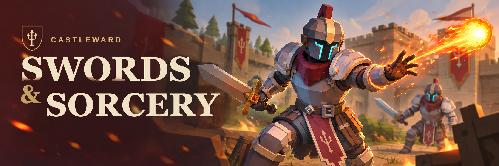
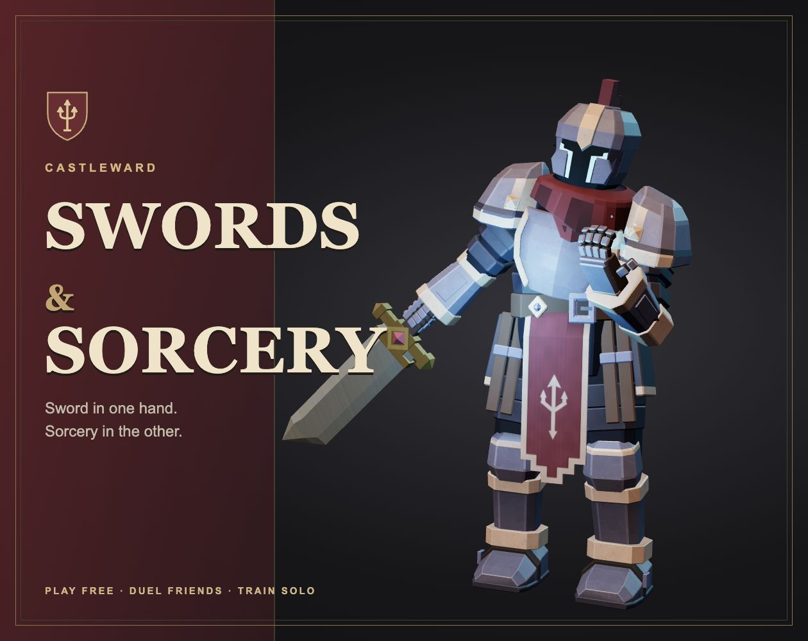
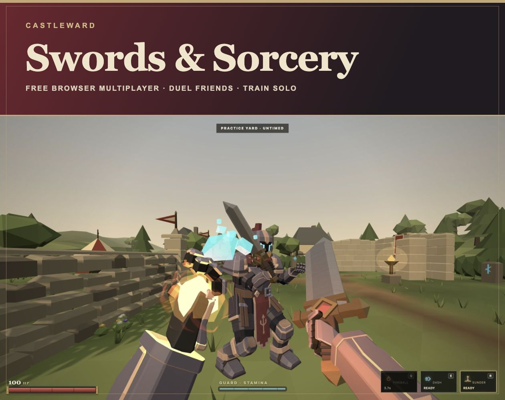
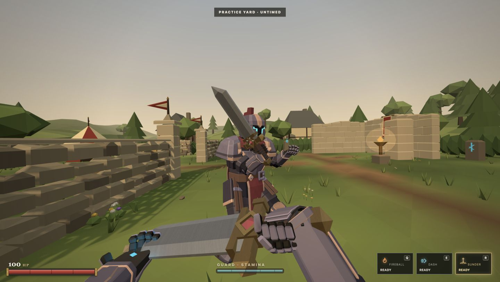
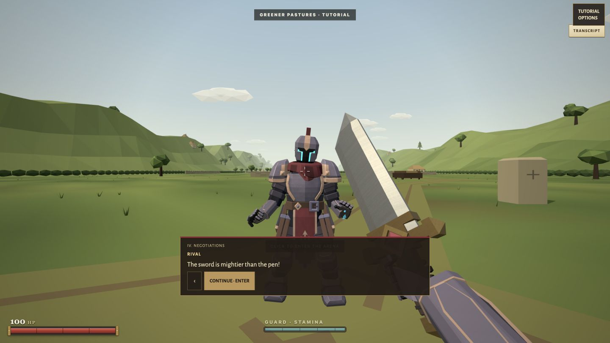
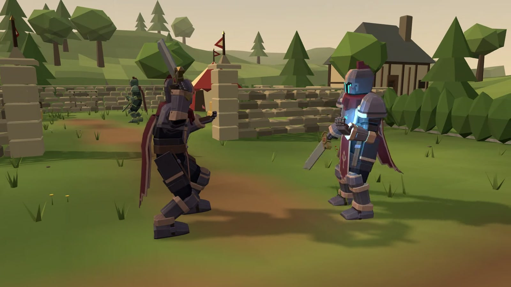
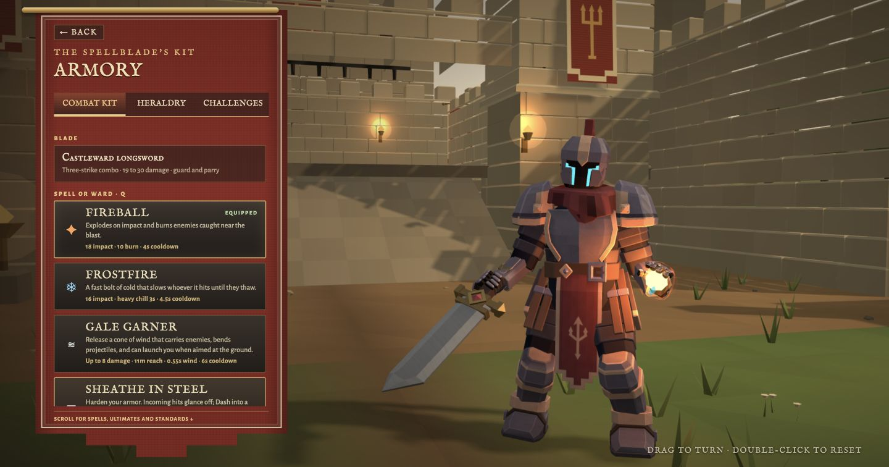

Swords & Sorcery · October 14 media
Current production model and actual game captures. The broader reconstruction remains unpublished.

Promotional illustration: AI assisted refinement of CaptainFredric's design. Not gameplay.
Previous cover: staged production model render.
New primary cover: actual current Fireball gather with native typography.
Actual ordinary sword and Guard contact, paused in Inspection Yard. Actual ordinary Fireball gather, paused in Inspection Yard.
Actual ordinary Fireball gather, paused in Inspection Yard.
Greener Pastures: actual chapter replay and authored captions.
Existing live Castleward menu scene, labeled distinctly from combat.
Current Armory at the normal desktop viewport.